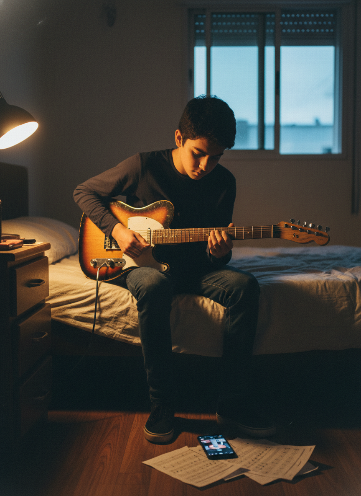

CENA 1
Por que você não aprende guitarra sozinho
Prompt da Vera
Close-up portrait, 3:4 vertical. Teenager around 16, alone in dimly-lit suburban bedroom in Brazil, electric guitar in lap, frustrated expression, scattered guitar tabs and phone showing paused YouTube tutorial. Single warm desk lamp, blue evening light through window. 50mm lens, f/2.0, photorealistic film grain, melancholic mood.
Vera: Emoção isolada. Subtexto: sozinho com tutorial vs com método/professor.

3:4 · 864×1184